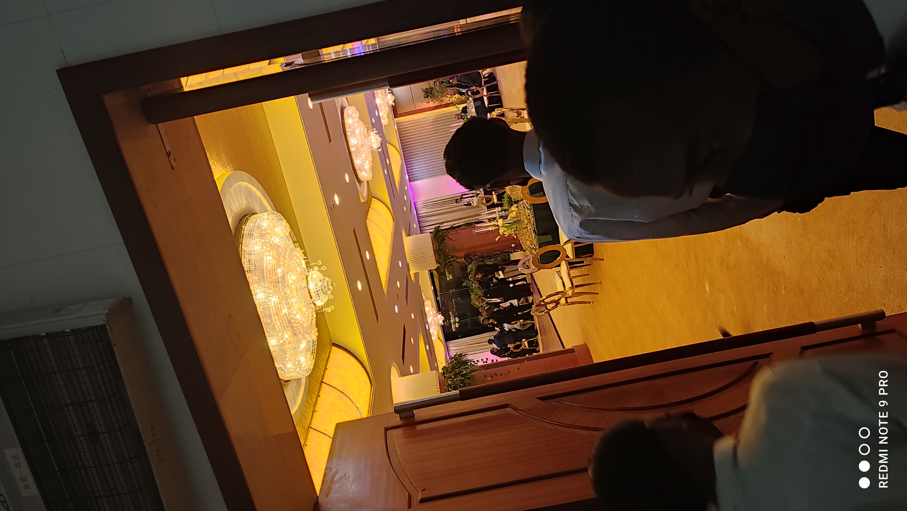
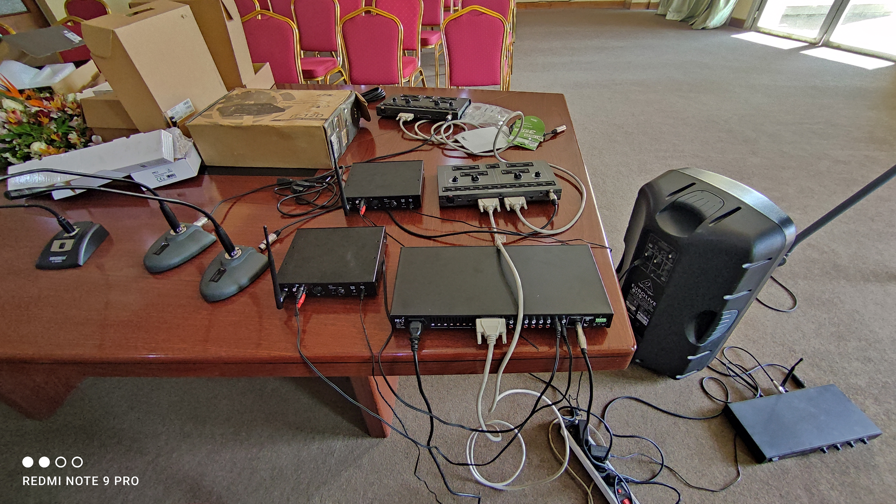

SUPPORT IT et MAINTENANCE INFORMATIQUE
Ministère des Affaires Étrangères
- Support IT et maintenances des appareils informatiques
- Occupant du bon déroulement du système
- Assiste les utilisateur en cas de besoin ou de nécéssité
- Assistant au 3ème EDITION DES ASSISES DE LA COOPERATION DÉCENTRALISÉE MADAGASCAR ET FRANCE au Novotel Ivandry
- Serveur au Dinée de la 45ème SOMMET DE LA SADC au CCI Ivato




